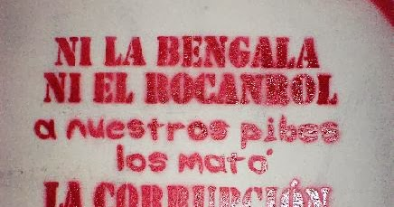

Discografia
- Solo por hoy
- Adelantos
- Sed
- Presión
- Rocanroles sin destino
- Señales
- Disco Escultura
Integrantes
- Patricio Santos Fontanet (voz)
- Cristian Torrejón (bajo)
- Elio Delgado (guitarra y coros, 2001-2010)
- Maximiliano Djerfy (guitarra, 2000-2009) (Fallecido)
- Eduardo Vázquez (batería, 1995-2010)
- Juan Carbone (saxo y bandoneón, 2001-2011)
Bibliografia
Callejeros fue una banda de rock barrial, argentina, formada en Ciudad Celina, en el año 1995 y disuelta en 2010.
Su primer nombre fue Río Verde. Musicalmente fue conocida por varias canciones,2 de las cuales «Una nueva noche fría» es la que tuvo mayor difusión.
El 30 de diciembre de 2004, y en su momento de mayor popularidad, la banda fue protagonista de los trágicos sucesos de República Cromañón, en los que murieron 194 personas, y que incidió radicalmente en la historia del grupo.
Canciones en vivo Obras (2004)
Cromañón
La tragedia de Cromañón fue un incendio producido la noche del 30 de diciembre de 2004 en República Cromañón, establecimiento ubicado en el barrio de Once de la ciudad de Buenos Aires, Argentina, durante un recital de la banda de rock Callejeros. Este incendio provocó la peor tragedia mundial en la historia de la música de rock y una de las mayores tragedias no naturales en Argentina dejando un saldo de 194 muertos y al menos 1432 heridos.Esta tragedia causó, además, importantes cambios políticos y culturales. Los familiares de los jóvenes fallecidos y los sobrevivientes del incendio conformaron un gran colectivo de movilización pública y demanda de justicia, por las muertes y los daños sufridos. En lo político, la Legislatura de la Ciudad de Buenos Aires inició un juicio político para destituir al entonces jefe de Gobierno Aníbal Ibarra por considerarlo responsable político de la tragedia.